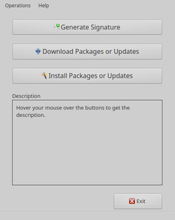

apt-offline
Dieser Artikel wurde für die folgenden Ubuntu-Versionen getestet:
Ubuntu 16.04 Xenial Xerus
Ubuntu 14.04 Trusty Tahr
Zum Verständnis dieses Artikels sind folgende Seiten hilfreich:
 apt-offline
apt-offline  ist ein Kommandozeilenwerkzeug, um einen Rechner ohne direkten Internetzugang mit Sicherheitsaktualisierungen und Updates zu versorgen. Darüber hinaus können auch einzelne Pakete damit installiert werden. Erstellt wurde es mit Python.
ist ein Kommandozeilenwerkzeug, um einen Rechner ohne direkten Internetzugang mit Sicherheitsaktualisierungen und Updates zu versorgen. Darüber hinaus können auch einzelne Pakete damit installiert werden. Erstellt wurde es mit Python.
Neben einem USB-Stick mit mindestens 1 GiB als Transportmedium wird ein zweiter Rechner mit Internetverbindung benötigt. Dieser Rechner muss mit Ubuntu, einer anderen Ubuntu-Variante oder Debian als Betriebssystem ausgestattet sein, da apt-offline auf beiden Rechnern benötigt wird. Bei Xubuntu ist das Programm ab 14.04 bereits vorinstalliert.
Eine grafische Benutzeroberfläche ist per apt-offline-gui verfügbar (siehe unten).
Vorbereitung¶
Um apt-offline auf einem Rechner ohne Internetzugang nutzen zu können, muss der betreffende Rechner im Rahmen der Installation mit dem Internet verbunden werden. Alle weiteren Schritte erfolgen dann ohne eine Internetverbindung. Des Weiteren sind auf dem Zielrechner Root-Rechte [1] erforderlich.
Die Installation muss auch auf dem zweiten Rechner erfolgen, der später als Quelle dienen soll.
Als Teil der Vorbereitung sollte man auch von den Einschränkungen des Programms wissen:
Einige spezifische Pakete unterstützen keine netzwerklose Installation, da sie Download-Skripte während des Installations- oder Aktualisierungsprozesses ausführen. Pakete, welche dieses Verhalten zeigen, sind z.B. flashplugin-installer, adobe-flashplugin, nautilus-dropbox, ttf-mscorefonts-installer und einige andere. Apt-offline eignet sich nicht für Installationspakete, die selbst Downloads durchführen.
Während der Verwendung von apt-offline erscheinen möglicherweise einige Warnungen in roter Schrift, die sich auf Download-Fehler von Übersetzungen oder fehlende LZMA-Dateien beziehen. Diese können ignoriert werden.
Installation¶

Das Programm ist Bestandteil der offiziellen Paketquellen. Folgendes Paket muss installiert werden [2]:
apt-offline (universe)
 mit apturl
mit apturl
Paketliste zum Kopieren:
sudo apt-get install apt-offline
sudo aptitude install apt-offline
Verwendung¶
Vor der konkreten Beschreibung noch einige prinzipielle Hinweise zur Funktion von apt-offline (die verwendeten Dateinamen sind nicht fix und dienen hier als nur Beispiel):
Zuerst wird eine Datei apt-offline.sig auf dem Rechner ohne Internetverbindung erstellt
Mit Hilfe dieser Datei wird auf dem Rechner mit Internetverbindung die Datei bundle.zip erzeugt, die alle notwendigen Dateien enthält
Diese beiden Datei dienen dann auf dem Rechner ohne Internetverbindung zur Aktualisierung der Paketquellen bzw. zur Systemaktualisierung.
Hinweis:
Vor jeder Verwendung ist eine auf dem USB-Stick vorhandene Datei bundle.zip zu entfernen.
Aktualisieren der Paketquellen¶
Man öffnet ein Terminal [3] und erzeugt eine Anfrage, um die lokalen Paketquellen auf dem Rechner zu aktualisieren:
sudo apt-offline set --update apt-offline.sig
Dann schließt man das Terminalfenster und kopiert die Datei apt-offline.sig auf den USB-Stick.
Der USB-Stick wird nun an einen mit dem Internet verbundenen Rechner angeschlossen. Dann wechselt man in das Verzeichnis auf dem USB-Speicher, welches die Datei apt-offline.sig enthält, öffnet hier ein Terminalfenster und verwendet folgenden Befehl:
apt-offline get --bundle bundle.zip apt-offline.sig
Wenn dies abgeschlossen ist, entfernt man den USB-Speicher und bringt ihn zurück an den vom Netzwerk getrennten Rechner.
Am unverbundenen Computer steckt man den USB-Speicher wieder ein. Im Verzeichnis auf dem Flashspeicher, der die beiden Dateien bundle.zip und apt-offline.sig enthält, öffnet man erneut ein Terminalfenster, um folgenden Befehl zu starten:
sudo apt-offline install bundle.zip
Sobald der Befehl vollständig ausgeführt worden ist, sind die Paketquellen aktualisiert und das verwendete Terminalfenster kann geschlossen werden.
Aktualisierung des Offline-Systems¶
Die Aktualisierung des Offline-Systems erfordert zwei Schritte: Das Aktualisieren der Paketquellen und das Herunterladen und Aktualisieren der Pakete. Diese beiden Schritte können mit apt-offline zusammengefasst werden.
Man verbindet den USB-Speicher mit dem Computer, navigiert zum Verzeichnis des USB-Speichers und öffnet hier ein Terminal-Fenster:
sudo apt-offline set --update --upgrade-type dist-upgrade apt-offline.sig
Mit installiertem apt-offline auf dem Computer mit Internetzugang benutzt man die Datei apt-offline.sig zum Herunterladen der Software, die der unverbundene Computer zum Aktualisieren benötigt. Im Verzeichnis auf dem USB-Speicher, der diese Datei enthält, öffnet man ein Terminalfenster und führt folgenden Befehl aus:
apt-offline get --bundle bundle.zip apt-offline.sig
Wenn der Vorgang abgeschlossen ist, entfernt man den USB-Speicher wieder und bringt ihn zurück zum unverbundenen Computer.
Am Computer ohne Internetverbindung steckt man USB-Flashspeicher ein und navigiert zum Verzeichnis mit den beiden Dateien. Nun öffnet man ein Terminalfenster, um folgenden Befehl zu starten:
sudo apt-offline install bundle.zip
Sobald der Befehl vollständig ausgeführt worden ist, sind die Paketquellen aktuell.
Nun nimmt man die Aktualisierung vor:
sudo apt-get dist-upgrade
Installieren eines Pakets¶
Man kann apt-offline auch dazu nutzen, um ein einzelnes Paket zum Installieren herunterzuladen. Diese Aktion wird auch hier mit dem Aktualisieren der Paketquellen kombiniert.
Im folgenden Beispiel soll ein neues Programmpaket PAKETNAME installiert werden. Ziemlich häufig erfordert das Installieren eines Pakets auch die Installation von Abhängigkeiten in Form zusätzlicher Pakete. Apt-offline übernimmt das Auflösen dieser Abhängigkeiten.
Man verbindet den USB-Speicher mit dem Computer, navigiert zum Verzeichnis des USB-Speichers und öffnet hier ein Terminal-Fenster:
sudo apt-offline set --install-packages PAKETNAME --update apt-offline.sig
Mit installiertem apt-offline auf einem Computer mit Internetverbindung benutzt man diese Datei zum Herunterladen und Installieren von
PAKETNAME. Im Ordner, der die Datei apt-offline.sig enthält, öffnet man ein Terminalfenster und führt folgenden Befehl aus:apt-offline get --bundle bundle.zip apt-offline.sig
Wenn der Vorgang abgeschlossen ist, entfernt man den USB-Speicher und bringt ihn zum unverbundenen Computer zurück.
Am Computer ohne Internetverbindung steckt man den USB-Speicher ein. Im Ordner, der die beiden Dateien enthält, öffnet man ein Terminalfenster und führt folgenden Befehl aus:
sudo apt-offline install bundle.zip
Sobald der Vorgang abgeschlossen ist, sind die Paketquellen aktuell.
Nun kann man mit dem Installieren von
PAKETNAMEfortfahren, in dem man den folgenden Befehl eingibt:sudo apt-get install PAKETNAME
Grafische Oberfläche¶
 Wenn die grundlegenden Vorgänge verstanden worden sind, kann man alternativ zur Kommandozeilenversion auch eine ausschließlich englischsprachige grafische Oberfläche nutzen. Diese verwendet die Grafikbibliothek Qt4 als Grundlage.
apt-offline-gui (universe)
gksu (universe)
mit apturl
Paketliste zum Kopieren:
sudo apt-get install apt-offline-gui gksu
sudo aptitude install apt-offline-gui gksu
Anschließend kann man das Programm bei Ubuntu-Varianten mit einem Anwendungsmenü über den Eintrag "System -> APT Offline" starten [4]. Das Programm bietet über die drei Schaltflächen:
"Generate Signature" - auf dem Rechner ohne Internetverbindung
"Download Packages or Updates" - auf dem Rechner mit Internetverbindung
"Install Packages or Updates" - auf dem Rechner ohne Internetverbindung
exakt die oben beschriebene Funktionalität der Kommandozeilenversion.
Hinweis:
Da der mitgelieferte Programmstarter die notwendigen Root-Rechte nicht berücksichtigt, ruft man das Programm entweder über den Befehl:
gksudo apt-offline-gui
auf oder passt den Programmstarter entsprechend an.
Programmstarter anpassen¶
Um den Programmstarter anzupassen, kopiert man die Datei /usr/share/applications/apt-offline-gui.desktop ins Homeverzeichnis nach ~/.local/share/applications/apt-offline-gui.desktop und ändert die Exec=-Zeile ab (die Änderung ist gelb markiert) [5]:
[Desktop Entry] Type=Application Name=APT Offline GenericName=APT Offline Comment=Offline APT Package Management Exec=/usr/bin/gksudo apt-offline-gui Categories=Utility;System;
Nun sollte der weiteren Verwendung nichts mehr im Weg stehen.
Problembehebung¶
Unterschiedliche Programmversionen¶
Bedingt durch unterschiedliche Ubuntu-Versionen enthalten die offiziellen Paketquellen auch unterschiedliche Versionen von apt-offline. Um Fehlerquellen auszuschließen, ist es empfehlenswert, möglichst die aktuelle Version oder zumindest identische Versionen auf beiden beteiligten Rechnern zu nutzen.
Da es sich bei apt-offline letztlich nur um ein Python-Skript handelt, kann man die Version 1.7 als DEB-Paket  herunterladen und manuell installieren. Diese Vorgehensweise empfiehlt sich insbesondere bei Ubuntu 14.04.
herunterladen und manuell installieren. Diese Vorgehensweise empfiehlt sich insbesondere bei Ubuntu 14.04.
Unterschiedliche Systemarchitekturen¶
Idealerweise sollten beide Rechner die gleiche Systemarchitektur besitzen. Kombinationen aus 32- und 64-bit-Rechnern wurden im Rahmen dieses Artikels nicht getestet.
Windows zum Herunterladen nutzen¶
Prinzipiell kann man auch einen Computer mit Microsoft Windows benutzen, um mit apt-offline die Datei bundle.zip zu erstellen. Allerdings enthält Windows im Gegensatz zu Debian und Ubuntu kein Python.
Anstatt Python unter Windows nachzuinstallieren, ist es in der Praxis wesentlich einfacher, sich einen USB-Stick mit Debian bzw. Ubuntu zu erstellen und einen mit dem Internet verbundenen Rechner über diesen zu starten. Nun kann man apt-offline wie oben beschrieben nutzen. Anschließend entfernt man den USB-Stick und bootet den Rechner neu, um wieder Windows zu starten.
Normalerweise benötigt man bei dieser Variante ein zweiten USB-Stick, da auf Live-USB-Sticks nichts dauerhaft abgespeichert werden kann. Einfacher wird es mit einer Installation auf externen Speichermedien, die diese Einschränkung aufhebt.
Links¶
Blogeinträge
des Programmautors Ritesh Raj Sarraf
Kapitel 10. Netzlose Paketverwaltung
 - Xubuntu Dokumentation
- Xubuntu Dokumentationapt-offline im franz. Ubuntu-Wiki
APT
 Übersichtsseite zum Advanced Package Tool
Übersichtsseite zum Advanced Package ToolPaketverwaltung
Übersichtsartikel
- Erstellt mit Inyoka
-
 2004 – 2017 ubuntuusers.de • Einige Rechte vorbehalten
2004 – 2017 ubuntuusers.de • Einige Rechte vorbehalten
Lizenz • Kontakt • Datenschutz • Impressum • Serverstatus -
Serverhousing gespendet von